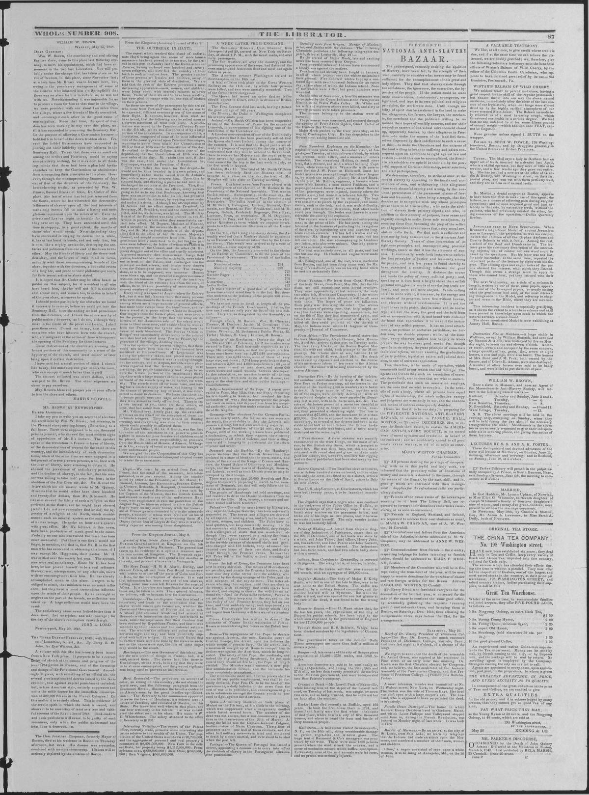

Told that the deck of the Esturra presented a most distressing
https://www.loc.gov/resource/sn84031524/1848-06-02/ed-1/?sp=3

See the original pageVer la página original
The Liberator reported that the deck of the vessel Esturra carried destitute refugees—some formerly wealthy—who had fled following a political confrontation in Port-au-Prince. According to the account, a deputation of influential men questioned President Soulouque regarding the reigning constitution, and upon being told the 1816 constitution was in effect, Senator Celigne Ardoin asserted that Soulouque was not president. When immediate orders were given for his arrest, Ardoin drew a pistol and fired at Soulouque, though the shot missed its mark.
The Liberator reportó que sobre la cubierta del buque Esturra viajaban refugiados desamparados —algunos acomodados en el pasado— que huyeron a consecuencia de una refriega política en Puerto Príncipe. Según el relato, una comisión de personalidades interpeló al presidente Soulouque sobre el régimen constitucional imperante, y al responderles éste que regía la carta de 1816, el senador Céligny Ardouin replicó que Soulouque carecía de investidura presidencial. Al dictarse su inmediata detención, Ardouin extrajo una pistola y descerrajó un tiro contra Soulouque, sin acertar en el blanco.
Where this standsEn qué punto está
The full text of this article is still being prepared. Until it is ready, this page carries a summary, the passage found on the page, and the link to the original, which is always one click away.El texto completo de este artículo aún se está preparando. Hasta que esté listo, esta página lleva un resumen, el pasaje encontrado en la página y el enlace al original, que siempre está a un clic.
The passage this summary was written fromEl pasaje del que se escribió este resumen
The passage where this article was found, copied from the newspaper page itself, reading errors and all. This is exactly what the summary above is based on.El pasaje donde se encontró este artículo, copiado de la propia página del periódico, con sus errores de lectura y todo. Esto es exactamente aquello en lo que se basa el resumen de arriba.
told that the deck of the Esturra presented a most
distressing appearance—men, women, and children,
were lying about with scarcely raiment to cover
them. Some of them are said to have been wealthy,
but were glad to escape with but one suit of clothes
on their persons.
As there are none of the passengers by this arrival
who come from Port-au-Prince, there are, as was to
be expected, different versions given of the cause of
their flight. It appears, however, from what we
have heard, that the following may be relied upon as
a correct statement of what took place. A procla
mation was issued by the President of Port-au-Prince
on the 6th ult., which was disapproved of by a large
portion of the inhabitants. In consequence of this, a
deputation, composed of some of the most influential
men of the country,waited upon President Soulouque,
requiring to know from him if the Constitution of
1816 or that of 1846 was the Constitution of the day.
He replied to Senator Celigne Ardoin (one of the
deputation) that the Constitution of 1816 was the
new order of the day. M. h rdoin then said, if that
was the case, then under that Constitution he,
Soulouque, was not the President of Hayti.
This was rather too much for this despot—he
would not be thus bearded in his own palace, and
immediately as the words issued from M Ardoin’s
lips, orders were given to arrest, him. Upon this he j
stepped back, and drawing a pistol he had with him, i
discharged its contents at the President. This, from
some cause or other, took no effect, many persons
going so far as to say that Soulouqiwe, knowing that
How to cite this articleCómo citar este artículo
The Liberator. (1848). Boston, Mass., June 2, 18482 de junio de 1848. DR in the American PressRD en la Prensa Norteamericana. Library of Congress, Chronicling America: https://www.loc.gov/resource/sn84031524/1848-06-02/ed-1/?sp=3
ReferencesReferencias
Library of Congress, Chronicling America: The Liberator, June 2, 18482 de junio de 1848.
Send an observationEnviar una observación
Does this article connect with your family, your town, or something you know? Did we get something wrong? Write to us. Observations go to the editor's inbox and are read by a person.¿Este artículo conecta con su familia, su pueblo o algo que usted conoce? ¿Nos equivocamos en algo? Escríbanos. Las observaciones llegan al buzón del editor y las lee una persona.
Send observationEnviar observación